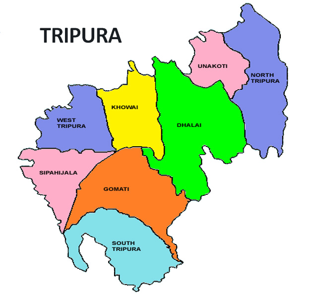

LET'S HAVE A LOOK AT THE TOUR MAP
WHERE TO VISIT , WHAT TO SEE?
SOME HOT PICKS(#HAVE_TO_VISIT)
- UJJAYANTA PALACE - ROYAL PALACE SITUATED AT THE CORE OF AGARTALA.THE NAME OF THIS PALACE WAS GIVEN BY RABINDRANATH TAGORE WHO USED TO VISIT HERE REGULARLY
- SEPAHIJALA WILDLIFE SANCTUARY - HOME TO VARIETY OF BIRDS AND PRIMATES
- CHITTANGONG HILLS - MINI MOUNTAIN RANGE WITH MULTIPLE VALLEYS AND A SMALL CANYON
- TRIPURA SUNDARI TEMPLE - PRIMITIVE ARTIFICIAL TERRACOTTA DESIGN TEMPLE
- NEERMAHAL - SITUATED IN THE MIDDLE OF RUDRASAGAR LAKE,THUS CALLED WATER PALACE.MAINLY FAMOUS AS THE SUMMER RESORT OF THE KING.
- UMMANESHWAR TEMPLE - WEST BENGAL CULTURED TEMPLE
- GONDACHERRA WILDLIFE SANCTUARY - UNTAINED HABITAT FOR WILDLIFE, MAINLY FOR THE BISONS
- JAGANNATH TEMPLE - ISLAMIC STYLE OF ARCHITECTURE AT THE EXTERIOR WITH HINDU WORSHIP
- BUDDHA TEMPLE - IMPORTANT RELIGIOUS SITE SHOWING INFLUENCE OF BUDDHISM ON THE PEOPLE OF TRIPURA
- RAIMA VALLEY - MOTHER LAND OF THE TRIBALS OF TRIPURA
OTHER_ATTRACTIONS
- JAMPUI HILLS - ETERNAL HILLS OF SPRING HAVING PLEASANT WEATHER THROUGHOUT THE YEAR
- KUNJABAN PALACE - BUILT BY KING BIRENDRA KISHORE IT IS NOW THE OFFICIAL RESIDENCY OF THE GOVERNOR OF TRIPURA